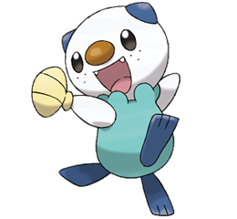

Oshawott

Oshawott is the 501st Pokemon introduced in the games,
Pokemon Black and White. It is one of the three starter
Pokemon players can choose in the games. With the shell, scalchop, in its hands,
Oshawott uses it to slice at its opponents. Through levelling up, it eventually
evolves into Dewott, and then Samurott.
- Oshawott is extremely cute. I love that it has a little shell
in its hand and sometimes uses it as a pillow!
- Watching the show as a kid, Oshawott was very goofy and always had the
best expressions. It was lazy and reminded me of myself.
- Oshawott is a water-type Pokemon, which is obviously the best choice for
starter Pokemon!